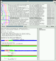
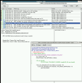

A couple of graphical git front ends
One of those rough edges has been the lack of graphical tools for working with the repository. Things are happening in this area as well, however, and there are now two tools available which warrant a look. These tools (being gitk and qgit) both function as patch browsers; neither, currently, can actually make any changes to a git repository. In other words, capabilities like three-way patch conflict resolution are still missing. But you have to start somewhere; either of these tools will be helpful for anybody who wishes to look at the path the kernel took to get to the current point.
gitk is a Tk-based utility written by Paul Mackerras; the current release
is version 1.1. The build

Running gitk yields a three-paned window. At the top is a reverse-time list of committed patches, along with a graphical trace showing which tree each patch was merged from. Tags in the repository are indicated by a cute little yellow tag in this pane. The bottom left shows the selected patch in a fairly gaudy, colorful form. The commit text and the patch itself are run together, just as they would appear in an emailed patch. On the lower right is a list of files touched by the current patch; clicking on the name of a file narrows the view to the corresponding portion of the patch.
There is a simple "find" function which can search for patches whose description or author information match a given string; searching with regular expressions is possible. If you know the SHA tag for a given commit, you can type (or paste, presumably) it into a blank and view the corresponding patch. gitk also stores the SHA ID of the current commit in the X selection, allowing it to be pasted into git commands if need be.
The alternative to gitk is qgit, a Qt-based application
currently at version 0.6. The initial experience with qgit is a little
rougher; the application uses SCons for
building instead of make. Since most systems tend not to have SCons

The initial qgit window looks very similar to gitk. The lower left pane shows only the commit text, however; the actual patch is nowhere to be seen. A single click on the filenames on the right appears to do nothing; a double click will pop up a separate window with the full text of the file. It turns out that one has to double-click on the appropriate line in the top pane to get a separate window with the patch itself. Once the window is up, it will be updated with the body of any patch selected in the main window. The presentation of the patches is a bit nicer than in gitk; the use of color is a bit more restrained, and patches are shown in the diff -up format that developers are used to reading. The patch window, however, has the obnoxious feature that it is permanently on top of any other window on the screen, regardless of the user's desires.
Nicely, in version 0.6, the qgit file browser window includes line-by-line annotation which makes it easy to figure out which commit modified a specific piece of code. This feature is enough to make one wish that the kernel.org git repository contained more than a few months of history.
qgit also makes it possible to search for specific patches; entering a string in the blank and clicking "filter" will narrow the patch view to the patches containing the string. It is not obvious, but the way back to the full listing is to hit "filter" again.
Once upon a time, your editor asked the BitKeeper folks how to determine which tree was the source of any particular changeset in the mainline. The answer that came back was that this information was not available - BitKeeper did not store it. So it is pleasing to see this information so readily in evidence in either git front end. We really do have a better handle on the development history than we did even a few months ago.
Both tools can be a bit rough to use at times, and their features are
limited. When one considers that, back at the beginning of March, none of
this software existed at all, it is hard not to be impressed. There is a
lot happening around git, and, chances are, we've just barely seen the
beginning of it.
| Index entries for this article | |
|---|---|
| Kernel | Development tools/Git |
Posted Jul 7, 2005 4:53 UTC (Thu)
by bronson (subscriber, #4806)
[Link] (1 responses)
Posted Jul 8, 2005 22:51 UTC (Fri)
by alspnost (guest, #2763)
[Link]
Posted Sep 28, 2005 17:24 UTC (Wed)
by Blaisorblade (guest, #25465)
[Link]
Wow, gitk looks really sharp. I may have to take back some of the snide things I've said about TCL/Tk. :)A couple of graphical git front ends
Indeed - can't really get my head around what it all means, but it sure looks cool :-) Despite being very, very far removed from being a kernel developer, I get a warm fuzzy feeling about all these nice new free, open tools to manage the development process. Even the new web interface at kernel.org is much nicer than the old bkbits.net offerings.A couple of graphical git front ends
The SCons issue was fixed - it is still used, but the package brings with itself a local copy which can be used even without going to the pain of installing it. I checked this is 0.93.qgit installation